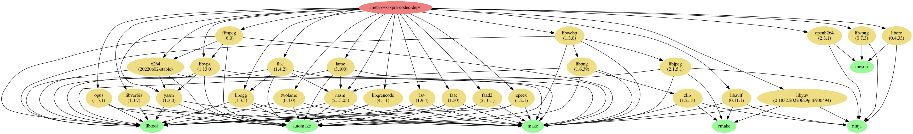
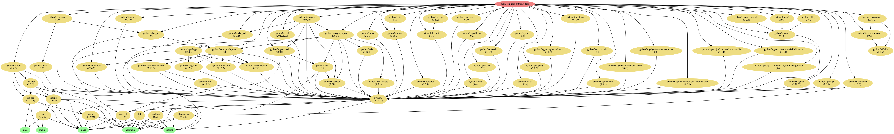
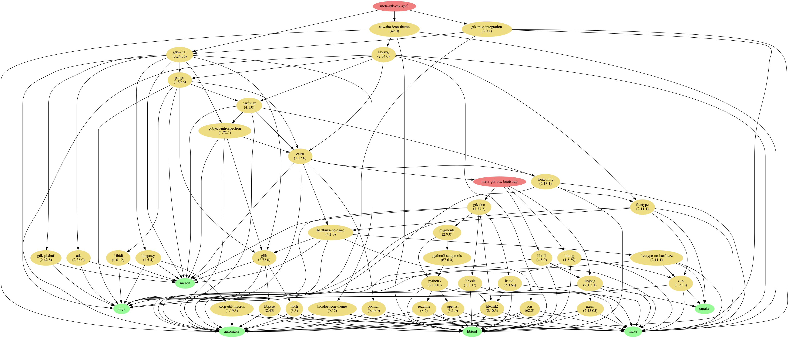
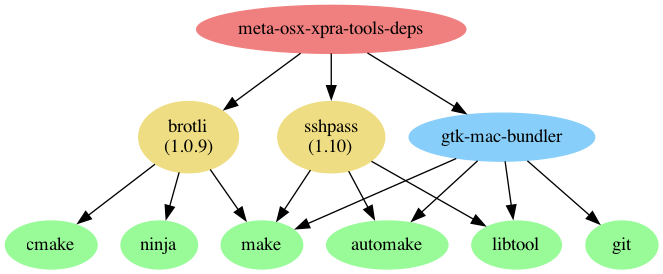
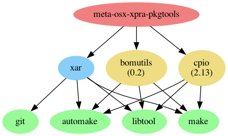

Most of these dependencies should be installed automatically when you
install official packages.
Unless otherwise stated, the dependencies are all optional.
The tools required for building all of these projects are not listed
here.
Typically, you will need: gcc or clang,
gnu-make, libiconv, gettext,
cmake, autoconf, automake,
pkg-config or pkgconf, bison,
flex, intltool, etc For building xpra itself
and some of the python modules, you will also need Cython
Those are required by almost every component.
| Project | Source Download Link | Purpose | Client or Server | Notes | |--------------------------------------------------|------------------------------------------------------------------------------------------------|----------------------------------------------------------------|------------------|:---------------| | glib | https://ftp.gnome.org/pub/gnome/sources/glib/ | low-level library | both | Required | | gtk | http://ftp.gnome.org/pub/gnome/sources/gtk+/ | UI Toolkit | both | Required (*) | | PyGObject | https://pypi.org/project/PyGObject/#files | Bindings for GObject based libraries such as GTK and GStreamer | both | Required (*) |
(*) needed for running any kind of server, or GUI clients.
It is not required for running text-only clients like
xpra top or xpra info.
And some of their transitive dependencies:
| Project | Source Download Link | Purpose |
|--------------------------------------------------------------------------------|-----------------------------------------------------------------|--------------------------------------|
| gobject-introspection
| https://gitlab.gnome.org/GNOME/gobject-introspection/-/releases |
Provides bindings for Gtk, GLib, etc | | librsvg |
https://gitlab.gnome.org/GNOME/librsvg/-/releases | svg
parsing | | freetype
| https://freetype.org/download.html | font parsing | | harfbuzzz |
https://github.com/harfbuzz/harfbuzz/releases | text shaping engine | |
icu |
https://github.com/unicode-org/icu/releases | unicode library | | pixman |
https://www.cairographics.org/releases/ | pixel manipulation | | fribidi |
https://github.com/fribidi/fribidi/releases | unicode bidirectional
library | | pango |
https://download.gnome.org/sources/pango/ | text layout and rendering |
| gdk-pixbuf |
https://gitlab.gnome.org/GNOME/gdk-pixbuf/-/releases | image library | |
libepoxy |
https://github.com/anholt/libepoxy/releases | OpenGL function pointer
management | | graphene
| https://github.com/ebassi/graphene/releases | types for graphic
libraries | | libtiff |
https://download.osgeo.org/libtiff/ | Tag Image File Format | | zlib | https://www.zlib.net/ |
Compression Library |
Some of the transitive dependencies are listed separately below as
they are direct dependencies of xpra itself. ie: lz4,
libpng, etc..
See Network
| Project | Source Download Link | Purpose | Client or Server | Notes | |--------------------------------------------------------------------|---------------------------------------------------------|----------------------------------------------------------------|---------------------|:-----------------------------------------------------| | lz4 | https://github.com/lz4/lz4/releases | packet compression | both | Strongly recommended | | aioquic | https://pypi.org/project/aioquic/ | low level network protocol | both | quic | | python-cryptography | https://pypi.python.org/pypi/cryptography | Encryption | both | | | pyopenssl | https://pypi.org/project/pyOpenSSL/ | Encryption | both | | | python-zeroconf | https://pypi.org/project/zeroconf/ | Multicast DNS session publishing and browsing | both | | | python-netifaces | https://pypi.python.org/pypi/netifaces | Multicast DNS session publishing | server | | | dbus-python | https://dbus.freedesktop.org/releases/dbus-python/ | desktop integration, server control interface | both | not applicable to MS Windows or Mac OSX | | openssl | https://www.openssl.org/source/ | SSL | both | | | paramiko | https://pypi.org/project/paramiko/ | ssh integration | both | | | sshpass | https://sourceforge.net/projects/sshpass/files/sshpass/ | non-interactive SSH password authentication | usually client | | | brotli | https://github.com/google/brotli/releases | HTML client compression | r15540 | | PySocks | https://github.com/Anorov/PySocks/releases | client | SOCKS proxy support | https://github.com/Xpra-org/xpra/issues/2105 |
| Project | Source Download Link | Purpose | Client or Server | Notes | |------------------------------------------------------------|---------------------------------------|----------|------------------|:------------------------------------------------------| | python-gssapi | https://pypi.org/project/gssapi/ | GSSAPI | server | #1691 | | python-kerberos | https://pypi.org/project/kerberos/ | Kerberos | server | #1691 | | python-ldap | https://pypi.org/project/python-ldap/ | LDAP | server | #1691 | | python-ldap3 | https://pypi.org/project/ldap3/ | LDAP v3 | server | #1691 | | pyu2f | https://pypi.org/project/pyu2f/ | U2F | server | #1789 |
| Project | Source Download Link | Notes |
|-----------------------------------------------------------|---------------------------------------------------------------------------------------------------------------|:-----------------------------------------------------|
| Cython |
https://pypi.org/project/Cython/#files | build time: C extensions for
Python | | python-ipaddress |
https://pypi.org/project/ipaddress/#files | unspecified: r11859 | | python-idna |
https://pypi.org/project/idna/#files | unspecified: r11860 | | python-decorator |
https://pypi.org/project/decorator/#files | required by gssapi: r18781 |
| pyasn1 |
https://pypi.org/project/pyasn1/#files | unspecified: r5829 | | asn1crypto |
https://pypi.org/project/asn1crypto/#files | required by
python-cryptography: r17856 | | python-packaging |
https://pypi.org/project/packaging/#files | required by
python-cryptography: r15310 | | pyparsing |
https://pypi.org/project/pyparsing/#files | required by
python-cryptography: r15310 | | cffi |
https://pypi.org/project/cffi/#files | required by python-cryptography:
r11633 | | six |
https://pypi.org/project/six/#files | required by python-cryptography:
r11640 | | setuptools |
https://pypi.org/project/setuptools/#files | unspecified: r5829 | | pycparser |
https://pypi.org/project/pycparser/#files | required by cffi: r11634 | |
pynacl |
https://pypi.org/project/PyNaCl/#files | crypto library used by
paramiko: r19967 | | bcrypt |
https://pypi.org/project/bcrypt/#files | crypto library used by
paramiko: r19965 | | pyopengl |
https://pypi.python.org/pypi/PyOpenGL#files and
https://pypi.python.org/pypi/PyOpenGL-accelerate#files | client OpenGL accelerated rendering | | pycups |
https://pypi.org/project/pycups/#files | Printing
|
| Project | Source Download Link | Purpose | Client or Server | |------------------------------------------------------------------------------------|-----------------------------------------------------------------------------------------------------|-----------------------------------------------------------------------|------------------| | x264 | ftp://ftp.videolan.org/pub/x264/snapshots/ | h264 encoding | server | | openh264 | https://github.com/cisco/openh264/releases | h264 encoding and decoding | both | | vpx | http://downloads.webmproject.org/releases/webm/index.html | vp8 and vp9 codecs | both | | webp | http://downloads.webmproject.org/releases/webp/index.html | webp codec | both | | libpng | ftp://ftp.simplesystems.org/pub/libpng/png/src/libpng16/ | png encoding | both | | libspng | https://libspng.org/download/ | faster png encoding | both | | libjpeg-turbo | https://sourceforge.net/projects/libjpeg-turbo/files/ | jpeg encoding | both | | python-pillow | https://pypi.python.org/pypi/Pillow | png,jpeg,webp encoding and decoding, format conversion - Required | both | | libavif | https://github.com/AOMediaCodec/libavif/releases | avif encoding and decoding | both | | libyuv | https://chromium.googlesource.com/libyuv/libyuv/ | Colourspace Conversion | both | | pycuda | https://pypi.python.org/pypi/pycuda | NVENC | server | | cuda | https://developer.nvidia.com/cuda-toolkit | NVENC | server | | pyNVML | https://pypi.python.org/pypi/nvidia-ml-py/ | NVENC | server |
See audio forwarding
| Project | Source Download Link | Purpose | |------------------------------------------------|--------------------------------------------------------|----------------------| | gstreamer | http://gstreamer.freedesktop.org/src/ | audio framework | | Ogg | http://downloads.xiph.org/releases/ogg/ | ogg container format | | opus | http://downloads.xiph.org/releases/opus/ | opus codec | | Flac | http://downloads.xiph.org/releases/flac/ | flac codec | | Vorbis | http://downloads.xiph.org/releases/vorbis/ | vorbis codec | | wavpack | http://www.wavpack.com/downloads.html | wavpack codec | | faac | https://github.com/knik0/faac/releases | aac encoder | | faad | https://github.com/knik0/faad2/releases | aac decoder | | lame | http://sourceforge.net/projects/lame/files/lame/ | MP3 encoder | | TwoLame | http://sourceforge.net/projects/twolame/files/twolame/ | MP3 encoder |
These graphs were generated using jhbuild dot on MacOS.
The MacOS builds include very low level build dependencies.




